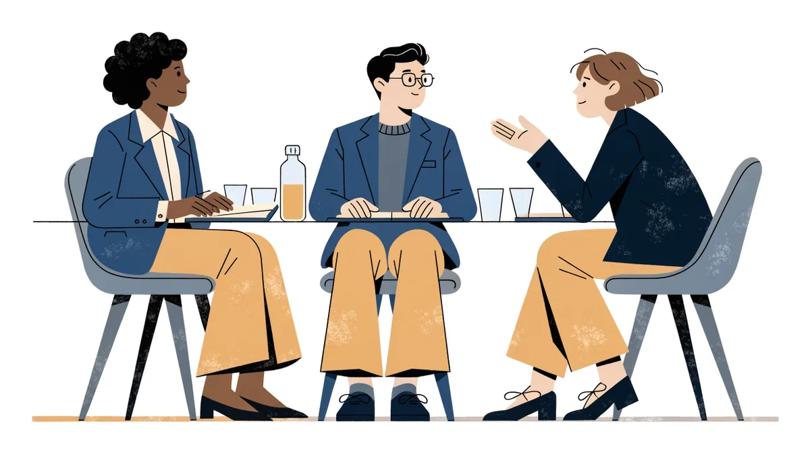
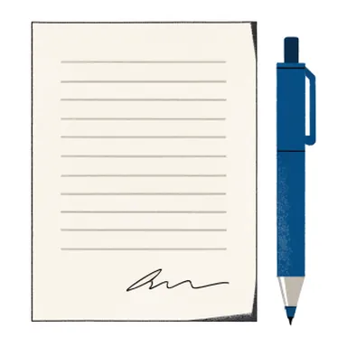
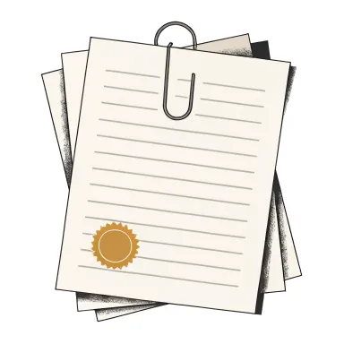
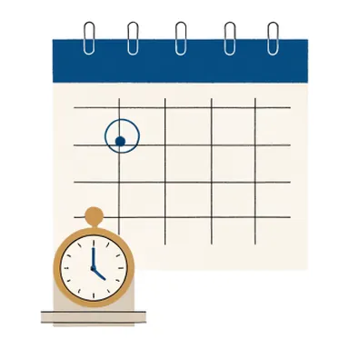
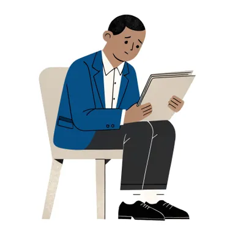
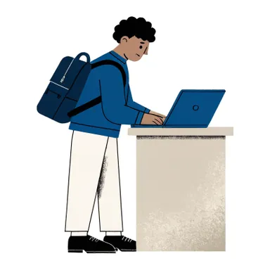
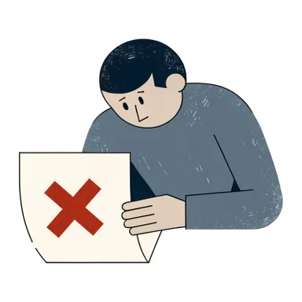

배우기 전에 먼저 해 보세요. 틀려도 괜찮아요.
Ich hatte fünf Jahre dort gearbeitet.는 언제의 일일까요?
hatte와 Partizip은 과거보다 더 앞선 일을 말해요.
die Zusage의 반대말은 무엇일까요?
Zusage는 된다는 답, Absage는 안 된다는 답이에요.

일자리에 지원하려면 내가 지금까지 무엇을 했는지 차례대로 말할 수 있어야 해요. 어떤 일이 다른 일보다 먼저 있었다는 것을 말하려면 새 시제가 필요해요. 이 과에서는 Plusquamperfekt(hatte gearbeitet, war gegangen)와 nachdem, bevor, seitdem을 배워요. 구인 광고를 읽고, 지원 편지를 쓰고, 면접 질문에 답하는 말도 익혀요.
문법 Plusquamperfekt, nachdem, bevor, seitdem, während
과제대학인턴십에 지원하고 면접 보기
과제직장옮기고 싶은 회사에 지원하고 면접 보기
이 과를 마치면 구인 광고를 분석하고, 지원서를 쓰고, 면접 질문에 답할 수 있어요.
이 과에서 쓸 말이에요. 눌러서 먼저 들어 보세요.
배우기 전에 먼저 해 보세요. 틀려도 괜찮아요.
Ich hatte fünf Jahre dort gearbeitet.는 언제의 일일까요?
hatte와 Partizip은 과거보다 더 앞선 일을 말해요.
die Zusage의 반대말은 무엇일까요?
Zusage는 된다는 답, Absage는 안 된다는 답이에요.
2028년 4월, WG 부엌이에요. Jiu는 3월 말에 Datenwerk의 인턴을 마쳤어요. Herr Engel이 구인 광고를 하나 보내 줬어요.
들으면서 찾아보세요. Jiu는 왜 카페 일을 그만두려고 하나요?
4월 중순, Frau Hoffmann의 사무실이에요. 여름에 여는 함부르크 사무실에서 일할 영업 직원을 뽑아요. Dohyun이 지원서를 읽고 왔어요.
들으면서 찾아보세요. Dohyun은 왜 Frau Petersen을 첫째로 꼽나요?
4월의 토요일, 카페예요. Sora는 4월 3일부터 디자인 회사 Farbraum에서 일해요. 수업은 끝났지만 Frau Becker와 가끔 만나요.
들으면서 찾아보세요. Sora는 면접에서 자기 약점이 무엇이라고 답했나요?
세 대화를 듣고 답하세요.
Datenwerk는 어떤 사람을 찾나요?
Jiu hat das Praktikumszeugnis noch nicht bekommen.
떠나기 전에 Frau Aydin이 줬어요.
Jiu는 그 자리를 얻으면 무엇을 하려고 하나요?
Frau Petersen은 함부르크로 오기 전에 무엇을 했나요?
Die Gehaltsvorstellung von Herrn Yilmaz steht im Anschreiben.
지원서에 없어서 면접에서 협상해야 해요.
Frau Hoffmann은 다른 지원자들을 어떻게 하라고 하나요?
Sora는 면접에서 약점이 무엇이라고 했나요?
Soras Vertrag ist zunächst auf ein Jahr befristet.
낱말 51개예요. 낱말이나 예문 앞의 단추를 누르면 소리가 나요. 명사는 der, die, das를 색으로 구분했어요.

das Anschreiben, die Anschreiben 지원 편지
Im Anschreiben erkläre ich, warum ich die Stelle möchte.지원 편지에서 왜 이 자리를 원하는지 설명해요.

die Anlage, die Anlagen 첨부 서류
Die Zeugnisse finden Sie in der Anlage.증명서는 첨부 서류에 있습니다.

die Bewerbungsfrist, die Bewerbungsfristen 지원 마감
Die Bewerbungsfrist endet am 28. April.지원 마감은 4월 28일이에요.

der Bewerber, die Bewerber 지원자
Für die Stelle gibt es zwanzig Bewerber.그 자리에 지원자가 스무 명 있어요.
die Anforderung, die Anforderungen 요구 사항
Ich erfülle fast alle Anforderungen.저는 요구 사항을 거의 다 채워요.
die Voraussetzung, die Voraussetzungen 조건, 자격
Gute Deutschkenntnisse sind Voraussetzung.좋은 독일어 실력이 조건이에요.
die Berufserfahrung 경력
Ich habe drei Jahre Berufserfahrung.저는 경력이 3년이에요.
die Kenntnisse 지식, 실력
Ich habe gute Kenntnisse in Statistik.저는 통계를 잘 알아요.
die Sprachkenntnisse 언어 실력
Welche Sprachkenntnisse haben Sie?어떤 언어를 하세요?
der Abschluss, die Abschlüsse 졸업, 학위
Im Sommer mache ich meinen Abschluss.여름에 졸업해요.
die Qualifikation, die Qualifikationen 자격, 능력
Sie hat die richtige Qualifikation.그 사람은 알맞은 자격을 갖췄어요.
die Tätigkeit, die Tätigkeiten 하는 일, 업무
Was waren Ihre Tätigkeiten im Praktikum?인턴 때 무슨 일을 하셨어요?
der Bereich, die Bereiche 분야
Ich möchte im Bereich Software arbeiten.저는 소프트웨어 분야에서 일하고 싶어요.

der Werkstudent, die Werkstudenten 일하는 대학생
Die Firma sucht einen Werkstudenten.회사가 일할 대학생을 찾아요.
befristet 기간이 정해진
Der Vertrag ist auf ein Jahr befristet.계약 기간은 1년으로 정해져 있어요.
unbefristet 기간이 정해지지 않은
Sie hat einen unbefristeten Vertrag.그 사람은 기간 없는 계약을 했어요.
die Empfehlung, die Empfehlungen 추천, 추천서
Meine Chefin hat mir eine Empfehlung geschrieben.팀장이 추천서를 써 줬어요.
die Stärke, die Stärken 강점
Was sind Ihre Stärken?강점이 무엇인가요?
die Schwäche, die Schwächen 약점
Jeder hat Schwächen.누구나 약점이 있어요.
die Fähigkeit, die Fähigkeiten 능력
Für diese Arbeit braucht man viele Fähigkeiten.이 일에는 여러 능력이 필요해요.
teamfähig 함께 일할 줄 아는
Wir suchen teamfähige Mitarbeiter.함께 일할 줄 아는 직원을 찾아요.
belastbar 힘든 일을 잘 견디는
In dieser Stelle muss man belastbar sein.이 자리에서는 힘든 일을 잘 견뎌야 해요.
geeignet 알맞은
Sie ist für die Stelle geeignet.그 사람은 그 자리에 알맞아요.
verantwortlich 책임을 맡은
Ich war für die Tests verantwortlich.저는 테스트를 맡았어요.
der Eindruck, die Eindrücke 인상
Er hat einen guten Eindruck gemacht.그 사람은 좋은 인상을 남겼어요.
erwarten (hat erwartet) 기대하다
Was erwarten Sie von der Stelle?그 자리에 무엇을 기대하세요?
die Erwartung, die Erwartungen 기대
Die Stelle passt zu meinen Erwartungen.그 자리는 제 기대에 맞아요.
die Gehaltsvorstellung, die Gehaltsvorstellungen 희망 급여
Wie sind Ihre Gehaltsvorstellungen?희망 급여가 어떻게 되세요?
verhandeln (hat verhandelt) 협상하다
Über das Gehalt kann man verhandeln.급여는 협상할 수 있어요.
begründen (hat begründet) 이유를 대다
Können Sie Ihre Entscheidung begründen?그렇게 정한 이유를 말씀해 주실 수 있나요?
der Kandidat, die Kandidaten 후보자
Wir laden drei Kandidaten ein.후보자 세 명을 초대해요.
auswählen (hat ausgewählt) 고르다, 뽑다
Wir wählen die besten Bewerber aus.가장 좋은 지원자들을 뽑아요.
einstellen (hat eingestellt) 채용하다
Die Firma stellt zwei Mitarbeiter ein.회사가 직원 두 명을 채용해요.
die Karriere, die Karrieren 직업에서 쌓는 길
Sie möchte Karriere machen.그 사람은 직장에서 성공하고 싶어 해요.
die Zusage, die Zusagen 합격 통보, 승낙
Gestern habe ich die Zusage bekommen.어제 합격 통보를 받았어요.

die Absage, die Absagen 불합격 통보, 거절
Leider habe ich eine Absage bekommen.아쉽게도 불합격 통보를 받았어요.
annehmen (du nimmst an, hat angenommen) 받아들이다
Ich nehme die Stelle an.그 자리를 받아들일게요.
ablehnen (hat abgelehnt) 거절하다
Er hat das Angebot abgelehnt.그 사람은 제안을 거절했어요.
beenden (hat beendet) 끝내다
Ich habe das Praktikum im März beendet.3월에 인턴을 마쳤어요.
die Rückmeldung, die Rückmeldungen 답, 회신
Ich warte noch auf eine Rückmeldung.아직 답을 기다리고 있어요.
Bescheid geben 알려 주다
Wir geben Ihnen bis Freitag Bescheid.금요일까지 알려 드리겠습니다.
die Gelegenheit, die Gelegenheiten 기회
Das ist eine gute Gelegenheit.좋은 기회예요.
der Arbeitsbeginn 근무를 시작하는 날
Arbeitsbeginn ist der 1. Juni.근무는 6월 1일에 시작해요.
nachdem ~한 뒤에
Nachdem ich angekommen war, rief ich an.도착한 뒤에 전화했어요.
bevor ~하기 전에
Bevor ich gehe, schreibe ich die E-Mail.가기 전에 메일을 써요.
seitdem ~한 뒤로 줄곧
Seitdem ich hier arbeite, lerne ich viel.여기서 일한 뒤로 많이 배워요.
sobald ~하는 대로
Ich melde mich, sobald ich etwas weiß.뭔가 알게 되는 대로 연락할게요.
zunächst 먼저, 우선
Zunächst lesen wir die Unterlagen.먼저 서류를 읽어요.
anschließend 이어서
Anschließend laden wir die Kandidaten ein.이어서 후보자들을 초대해요.
inzwischen 그사이에, 이제는
Inzwischen kenne ich alle Kollegen.이제는 동료들을 다 알아요.
zuvor 그전에
Sie hatte zuvor in Berlin gearbeitet.그 사람은 그전에 베를린에서 일했어요.
이 과의 낱말로 여덟 문제를 풀어요.
줄을 누르면 소리가 나요. 먼저 있었던 일은 hatte나 war와 Partizip으로 말해요.
줄을 누르면 소리가 나요. nachdem 문장에는 먼저 있었던 일이, bevor 문장에는 나중 일이 와요.
규칙
지난 일을 이야기하다가, 그보다 더 앞서 있었던 일을 말할 때 Plusquamperfekt를 써요. 만드는 법은 Perfekt와 같고, haben과 sein만 Präteritum으로 바꿔요. hat gearbeitet는 hatte gearbeitet가 되고, ist gegangen은 war gegangen이 돼요. sein을 쓰는 동사는 Perfekt 때와 같아요.
| Perfekt | Plusquamperfekt | |
|---|---|---|
| ich | habe gearbeitet | hatte gearbeitet |
| du | hast gearbeitet | hattest gearbeitet |
| er, sie | hat gearbeitet | hatte gearbeitet |
| wir | haben gearbeitet | hatten gearbeitet |
| ich | bin gegangen | war gegangen |
| wir | sind gegangen | waren gegangen |
주의 Plusquamperfekt는 혼자 쓰이는 일이 드물어요. 늘 다른 지난 일과 견줘서 써요. Ich kam zu spät. Der Zug war schon abgefahren. 뒤 문장이 먼저 있었던 일이에요.
규칙을 보고 바로 확인해 보세요.
Als ich anrief, … sie die Stelle schon bekommen. 빈칸에 알맞은 말은 무엇인가요?
규칙
nachdem은 '~한 뒤에'라는 뜻이에요. nachdem 문장에는 먼저 있었던 일이 오고, 동사는 문장 끝으로 가요. 주문장이 지난 일(Präteritum이나 Perfekt)이면 nachdem 문장은 Plusquamperfekt로 써요. nachdem 문장이 앞에 오면 쉼표 뒤에 바로 동사가 와요.
| 먼저 있었던 일 | 그 뒤의 일 |
|---|---|
| Nachdem ich gegessen hatte, | ging ich spazieren. |
| Nachdem sie angekommen war, | rief sie an. |
주의 지금 늘 하는 일이나 앞으로의 일을 말할 때는 한 단계씩 당겨요. nachdem 문장은 Perfekt, 주문장은 Präsens예요. Nachdem ich gegessen habe, gehe ich spazieren. 전치사 nach와 헷갈리지 마세요. nach 뒤에는 명사가 와요. nach dem Essen, nach dem Praktikum.
규칙을 보고 바로 확인해 보세요.
Nachdem ich die Zusage bekommen …, rief ich Minho an. 빈칸에 알맞은 말은 무엇인가요?
규칙
bevor는 '~하기 전에'라는 뜻이에요. bevor 문장에는 나중에 일어나는 일이 와요. 그래서 먼저 있었던 일은 주문장에 오고, 지난 이야기에서는 주문장을 Plusquamperfekt로 쓸 수 있어요. 말할 때는 두 문장을 같은 시제로 쓰는 일도 많아요.
| 나중 일 | 먼저 있었던 일 |
|---|---|
| Bevor ich hineinging, | hatte ich alles geübt. |
| Bevor ich gehe, | schreibe ich die E-Mail. |
주의 bevor와 vor를 가려 쓰세요. vor는 전치사라서 명사 앞에 와요. vor dem Gespräch. bevor는 문장을 이끌어요. bevor das Gespräch beginnt. nachdem과 nach도 같은 사이예요.
규칙을 보고 바로 확인해 보세요.
… ich unterschreibe, lese ich den Vertrag. 빈칸에 알맞은 말은 무엇인가요?
규칙
seitdem은 어떤 때부터 지금까지 이어지는 일을 말해요. 그래서 seitdem 문장과 주문장은 보통 둘 다 Präsens예요. während는 두 일이 같은 때에 일어난다는 뜻이에요. B1.1에서 배운 전치사 während(während des Praktikums)와 뜻은 같지만, 여기서는 문장을 이끌어요. sobald는 '~하는 대로 바로'예요.
| 접속사 | 뜻 | 보기 |
|---|---|---|
| seitdem | ~한 뒤로 줄곧 | Seitdem ich hier wohne, … |
| während | ~하는 동안 | Während ich koche, … |
| sobald | ~하는 대로 | Sobald ich Zeit habe, … |
| bis | ~할 때까지 | Bis du kommst, … |
주의 seitdem 대신 짧게 seit라고도 해요. Seit ich hier arbeite, lerne ich viel. 네 접속사 모두 동사가 문장 끝으로 가요.
규칙을 보고 바로 확인해 보세요.
… er selbstständig ist, arbeitet er allein. 빈칸에 알맞은 말은 무엇인가요?
듣고 알맞은 것을 고르세요.
무엇이 먼저였나요?
Nachdem ich das Praktikum beendet hatte, hat mir Herr Engel die Anzeige geschickt.
Sora는 언제 답을 연습했나요?
Bevor ich hineinging, hatte ich alle Antworten dreimal geübt.
지원서에 무엇이 없나요?
Seine Gehaltsvorstellung steht nicht in der Bewerbung.
언제 지원자들에게 알려야 하나요?
Geben Sie den anderen Bewerbern Bescheid, sobald wir uns entschieden haben.
Datenwerk에서 Jiu에게 전화가 왔어요. 듣고 답하세요.
Ein Anruf von Datenwerk
Frau Aydin Guten Tag, Frau Kim, hier ist Aydin von Datenwerk. Vielen Dank für Ihre Bewerbung.
Frau Aydin Nachdem wir alle Unterlagen gelesen hatten, haben wir vier Bewerber ausgewählt. Sie sind dabei.
Frau Aydin Wir möchten Sie zu einem Gespräch einladen: am Donnerstag, dem vierten Mai, um vierzehn Uhr.
Frau Aydin Das Gespräch dauert ungefähr eine Stunde. Bitte bringen Sie Ihren Studentenausweis mit.
Frau Aydin Bevor Sie kommen, schauen Sie sich bitte unsere neue App an. Wir geben Ihnen bis zum zwölften Mai Bescheid.
Wie viele Bewerber wurden ausgewählt?
Wann ist das Gespräch?
Jiu soll ihren Studentenausweis mitbringen.
Was soll Jiu vor dem Gespräch tun?
Die Firma gibt bis zum 4. Mai Bescheid.
5월 12일까지 알려 준다고 했어요.
Datenwerk의 구인 광고예요. 읽고 답하세요.
Werkstudent (m/w/d) im Bereich Softwaretest
Wir sind ein Softwareunternehmen in Frankfurt mit 40 Mitarbeitern. Für unser Testteam suchen wir ab 1. Juni Verstärkung.
Ihre Aufgaben: Sie testen neue Funktionen unserer Apps, tragen Fehler in eine Liste ein und besprechen sie mit den Entwicklern.
Ihre Qualifikation: Sie studieren Informatik oder ein ähnliches Fach. Sie haben erste Erfahrung im Testen. Sie arbeiten genau und sind teamfähig.
Sprachkenntnisse: gutes Englisch, Deutsch mindestens auf dem Niveau B1.
Wir bieten: 15 Stunden pro Woche, flexible Arbeitszeiten und die Möglichkeit, bei uns die Abschlussarbeit zu schreiben. Der Vertrag ist zunächst auf zwölf Monate befristet.
Bitte schicken Sie Anschreiben, Lebenslauf und Zeugnisse bis zum 28. April an jobs@datenwerk.example.com.
Ab wann sucht die Firma jemanden?
Was gehört zu den Aufgaben?
Man muss schon einen Abschluss in Informatik haben.
컴퓨터 공학이나 비슷한 과목을 공부하고 있으면 돼요.
Wie lange läuft der Vertrag zunächst?
Die Bewerbung soll per E-Mail geschickt werden.
괄호 안의 동사를 Plusquamperfekt에 맞게 쓰세요. haben이나 sein의 지난 모양을 넣어요.
Ich die Unterlagen schon geschickt. (haben)
서류는 벌써 보내 두었어요.
Als ich ankam, der Chef schon gegangen. (sein)
제가 도착했을 때 팀장은 벌써 가고 없었어요.
Wir alle Bewerbungen gelesen. (haben)
우리는 지원서를 다 읽은 뒤였어요.
Sie ein Jahr zuvor nach Hamburg gezogen. (sein)
그 사람은 한 해 전에 함부르크로 이사했어요.
du das Zeugnis schon bekommen? (haben)
증명서는 벌써 받은 뒤였어요?
Die Bewerber zu früh gekommen. (sein)
지원자들이 너무 일찍 와 있었어요.
알맞은 접속사를 고르세요.
ich die Zusage bekommen hatte, rief ich Minho an.
합격 통보를 받은 뒤에 Minho에게 전화했어요.
ich unterschreibe, lese ich den Vertrag genau.
서명하기 전에 계약서를 꼼꼼히 읽어요.
ich im Café arbeite, habe ich samstags keine Zeit.
카페에서 일한 뒤로 토요일에는 시간이 없어요.
Ich melde mich, ich etwas weiß.
뭔가 알게 되는 대로 연락할게요.
die Chefin telefoniert, wartet der Bewerber im Flur.
팀장이 전화하는 동안 지원자는 복도에서 기다려요.
Lies bitte mein Anschreiben, ich es abschicke.
제가 보내기 전에 지원 편지를 읽어 줘요.
시제를 보고 알맞은 동사를 고르세요.
Nachdem ich das Praktikum beendet , bewarb ich mich um die Stelle.
인턴을 마친 뒤에 그 자리에 지원했어요.
주문장이 지난 일이면 nachdem 문장은 Plusquamperfekt예요.
Nachdem sie nach Hause gekommen , wartete sie auf den Anruf.
집에 돌아온 뒤에 전화를 기다렸어요.
kommen은 sein과 써요.
Nachdem ich gegessen , gehe ich immer spazieren.
저는 밥을 먹은 뒤에 늘 산책을 해요.
지금 늘 하는 일이면 Perfekt와 Präsens예요.
Bevor er selbstständig wurde, er zehn Jahre in einer Firma gearbeitet.
자기 사업을 시작하기 전에 한 회사에서 10년 동안 일했어요.
Seitdem ich hier , fahre ich mit dem Rad zur Arbeit.
여기 산 뒤로 자전거로 출근해요.
seitdem은 지금까지 이어지는 일이라서 Präsens예요.
낱말을 순서대로 눌러 문장을 만드세요.
도착한 뒤에 전화했어요.
가기 전에 메일을 써요.
답을 모두 연습해 두었어요.
여기서 일한 뒤로 많이 배워요.
금요일까지 알려 드리겠습니다.
뜻이 반대인 말을 짝지으세요.
빈칸에 알맞은 낱말을 쓰세요.
Im erkläre ich, warum ich die Stelle möchte.
지원 편지에서 왜 이 자리를 원하는지 설명해요.
Ich habe drei Jahre .
저는 경력이 3년이에요.
Wir geben Ihnen bis Freitag .
금요일까지 알려 드리겠습니다.
Sie hat einen guten gemacht.
그 사람은 좋은 인상을 남겼어요.
듣고 그대로 써 보세요.
Die Bewerbungsfrist endet im April. 지원 마감은 4월이에요.
Nachdem ich die Zusage bekommen hatte, rief ich Minho an. 합격 통보를 받은 뒤에 Minho에게 전화했어요.
Ich habe drei Kandidaten ausgewählt. 후보자 세 명을 골랐어요.
Ich studiere im vierten Semester Informatik. 저는 컴퓨터 공학과 4학기예요.
Ich arbeite seit drei Jahren als Ingenieurin. 저는 3년 전부터 엔지니어로 일해요.
Zuvor hatte ich ein Praktikum bei einer Softwarefirma gemacht. 그전에는 소프트웨어 회사에서 인턴을 했어요.
Ich komme aus Korea und lebe seit zwei Jahren in Deutschland. 저는 한국에서 왔고 2년 전부터 독일에 살아요.
Ich war für die Tests verantwortlich. 저는 테스트를 맡았어요.
Dort habe ich gelernt, im Team zu arbeiten. 거기서 팀으로 일하는 법을 배웠어요.
Ich habe Erfahrung im Bereich Vertrieb. 저는 영업 분야의 경험이 있어요.
Nachdem ich mein Studium beendet hatte, habe ich bei einer Firma in Seoul gearbeitet. 대학을 마친 뒤에 서울의 한 회사에서 일했어요.
Meine Stärke ist, dass ich genau arbeite. 제 강점은 일을 꼼꼼하게 한다는 거예요.
Ich bin teamfähig und belastbar. 저는 함께 일할 줄 알고 힘든 일도 잘 견뎌요.
Manchmal bin ich zu ungeduldig. 가끔 너무 조급해요.
Daran arbeite ich. 그 점은 고치려고 애쓰고 있어요.
Die Stelle passt gut zu meinem Studium. 이 자리는 제 전공과 잘 맞아요.
Ich möchte mich weiterentwickeln. 저는 더 성장하고 싶어요.
Ihre Firma interessiert mich, weil sie international arbeitet. 회사가 여러 나라와 일하기 때문에 관심이 있어요.
Ich suche eine neue Aufgabe mit mehr Verantwortung. 책임이 더 큰 새 일을 찾고 있어요.
Wie sieht ein normaler Arbeitstag aus? 평소의 하루는 어떻게 흘러가나요?
Wann ist der Arbeitsbeginn? 근무는 언제 시작하나요?
Bis wann geben Sie mir Bescheid? 언제까지 알려 주시나요?
Vielen Dank für das Gespräch. 오늘 면접 감사합니다.
과제 고르기
역할 대화와 말하기, 쓰기 과제는 대학 생활과 직장 생활 두 가지예요. 하나를 고르면 다음 과에서도 그쪽 과제가 나와요. 언제든 바꿀 수 있어요.
대화 A에서 역할을 하나 고르세요. 상대의 말은 음성으로 나오고, 내 차례에는 직접 말해요.
대화 B에서 역할을 하나 고르세요. 상대의 말은 음성으로 나오고, 내 차례에는 직접 말해요.
내 이야기로 칸을 채우세요. 완성된 문장을 소리 내어 읽어 보세요.
Ich studiere Informatik.
Zuvor hatte ich ein Praktikum gemacht.
Meine Stärke ist, dass ich genau arbeite.
Ich möchte im Bereich Software arbeiten.
나는 컴퓨터 공학과 4학기 학생이에요. 한 소프트웨어 회사가 8월부터 석 달 동안 일할 인턴을 찾아요. 지원서를 보냈고 면접에 초대받았어요.
지난해에 대학 프로젝트에서 테스트를 맡았어요. 강점은 꼼꼼함이고, 약점은 가끔 조급하다는 거예요. 독일어는 B1 과정을 마쳤어요. 8월 1일부터 일할 수 있어요.
면접관이 물어요. 쪽지를 보고 답하세요. 질문을 듣고 소리 내어 답한 뒤 예시 답과 비교해 보세요.
Guten Tag. Stellen Sie sich bitte kurz vor. 안녕하세요. 짧게 자기소개를 해 주세요.
Guten Tag. Ich heiße Minji Choi und studiere im vierten Semester Informatik.
Haben Sie schon Erfahrung im Testen? 테스트 경험이 있나요?
Ja. Im letzten Jahr war ich in einem Projekt an der Uni für die Tests verantwortlich.
Was sind Ihre Stärken und Schwächen? 강점과 약점이 무엇인가요?
Meine Stärke ist, dass ich genau arbeite. Manchmal bin ich zu ungeduldig, aber daran arbeite ich.
Wie gut ist Ihr Deutsch? 독일어는 얼마나 하세요?
Ich habe den Kurs B1 beendet. Seitdem ich in Deutschland lebe, spreche ich jeden Tag Deutsch.
Ab wann könnten Sie anfangen? 언제부터 일할 수 있나요?
Ab dem ersten August. Bis wann geben Sie mir Bescheid?
Bewerbung um ein Praktikum
인턴 자리에 지원하는 편지를 써 보세요. 일곱 문장쯤 써요.
Sehr geehrte Frau Berger, mit großem Interesse habe ich Ihre Anzeige auf der Seite der Universität gelesen. Ich studiere im vierten Semester Informatik und suche ab August ein Praktikum im Bereich Softwaretest. Im letzten Jahr hatte ich in einem Projekt an der Uni schon erste Erfahrung im Testen gesammelt. Ich arbeite genau und bin teamfähig. Ich spreche fließend Englisch und habe den Deutschkurs B1 beendet. Meinen Lebenslauf und meine Zeugnisse finden Sie in der Anlage. Über eine Einladung zu einem Gespräch freue ich mich sehr. Mit freundlichen Grüßen, Minji Choi
다 쓴 뒤에 확인해 보세요.
나는 한 기계 회사에서 3년째 엔지니어로 일해요. 북부 독일의 고객을 맡고 있어요. 다른 회사가 프로젝트 책임자를 찾는다는 광고를 봤어요. 지원서를 보냈고 면접에 초대받았어요.
책임이 더 큰 일을 하고 싶어서 옮기려고 해요. 강점은 고객과 이야기를 잘한다는 것이고, 약점은 일을 남에게 잘 맡기지 못한다는 거예요. 지금 회사는 석 달 전에 알려야 그만둘 수 있어요.
면접관이 물어요. 쪽지를 보고 답하세요. 질문을 듣고 소리 내어 답한 뒤 예시 답과 비교해 보세요.
Guten Tag. Erzählen Sie bitte kurz von Ihrer jetzigen Stelle. 안녕하세요. 지금 하시는 일을 짧게 이야기해 주세요.
Guten Tag. Ich arbeite seit drei Jahren als Ingenieurin und bin für die Kunden in Norddeutschland zuständig.
Warum möchten Sie wechseln? 왜 옮기려고 하세요?
Ich suche eine neue Aufgabe mit mehr Verantwortung. Ihre Stelle als Projektleiterin passt gut zu meiner Erfahrung.
Was sind Ihre Stärken und Schwächen? 강점과 약점이 무엇인가요?
Meine Stärke ist, dass ich gut mit Kunden sprechen kann. Meine Schwäche: Ich gebe Aufgaben nicht gern ab. Daran arbeite ich.
Wie sind Ihre Gehaltsvorstellungen? 희망 급여가 어떻게 되세요?
Darüber würde ich gern mit Ihnen verhandeln. Mir ist die Aufgabe wichtiger als das Gehalt.
Ab wann könnten Sie bei uns anfangen? 언제부터 우리 회사에서 일할 수 있나요?
Meine Kündigungsfrist ist drei Monate. Ich könnte am ersten September anfangen.
Bewerbung um eine neue Stelle
옮기고 싶은 회사에 보내는 지원 편지를 써 보세요. 일곱 문장쯤 써요.
Sehr geehrter Herr Winter, mit großem Interesse habe ich Ihre Stellenanzeige gelesen und bewerbe mich um die Stelle als Projektleiterin. Seit drei Jahren arbeite ich als Ingenieurin bei einer Maschinenfirma in Frankfurt und bin für die Kunden in Norddeutschland zuständig. Zuvor hatte ich fünf Jahre bei einer Firma in Busan gearbeitet. Ich bin belastbar und spreche gern mit Kunden. Nun suche ich eine neue Aufgabe mit mehr Verantwortung. Meinen Lebenslauf und meine Zeugnisse finden Sie in der Anlage. Über eine Einladung zu einem Gespräch freue ich mich sehr. Mit freundlichen Grüßen, Minji Choi
다 쓴 뒤에 확인해 보세요.
Ich kann eine Stellenanzeige verstehen und die Anforderungen nennen.구인 광고를 이해하고 요구 사항을 말할 수 있어요.
Ich kann ein Anschreiben schreiben.지원 편지를 쓸 수 있어요.
Ich kann im Gespräch über meine Erfahrung, Stärken und Schwächen sprechen.면접에서 내 경험, 강점, 약점을 말할 수 있어요.
Ich kann sagen, was vor einem anderen Ereignis passiert war.어떤 일보다 먼저 있었던 일을 말할 수 있어요.